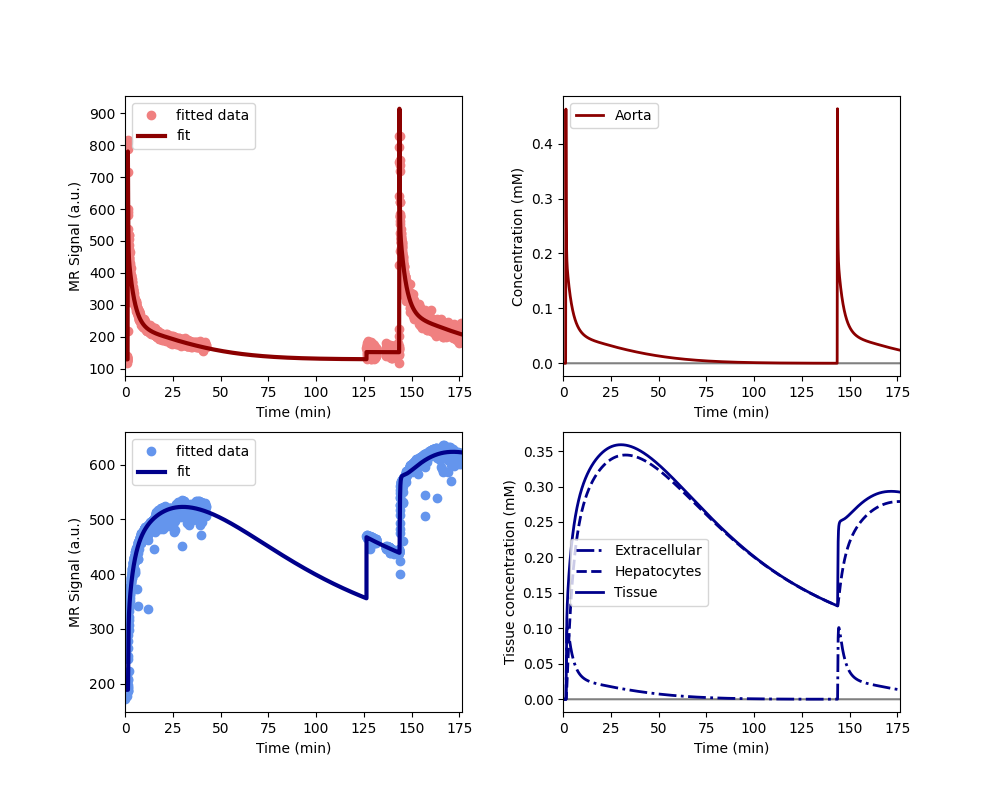
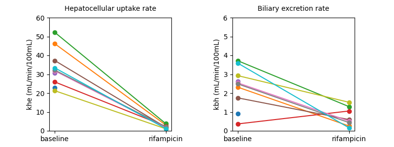

Note
Go to the end to download the full example code.
Clinical - rifampicin induced inhibition of liver function#
This example illustrates the use of AortaLiver2scan for joint
fitting of aorta and liver signals measured over 2 separate scans. The use
case is provided by the liver work package of the
TRISTAN project which develops imaging
biomarkers for drug safety assessment. The data and analysis was first
presented at the ISMRM in 2024 (Min et al 2024, manuscript in press).
The data were acquired in the aorta and liver of 10 healthy volunteers with dynamic gadoxetate-enhanced MRI, before and after administration of a drug (rifampicin) which is known to inhibit liver function. The assessments were done on two separate visits at least 2 weeks apart. On each visit, the volunteer had two scans each with a separate contrast agent injection of a quarter dose each. the scans were separated by a gap of about 1 hour to enable gadoxetate to clear from the liver. This design was deemed necessary for reliable measurement of excretion rate when liver function was inhibited.
The research question was to what extent rifampicin inhibits gadoxetate uptake rate from the extracellular space into the liver hepatocytes (khe, mL/min/100mL) and excretion rate from hepatocytes to bile (kbh, mL/100mL/min).
2 of the volunteers only had the baseline assessment, the other 8 volunteers completed the full study. The results showed consistent and strong inhibition of khe (95%) and kbh (40%) by rifampicin. This implies that rifampicin poses a risk of drug-drug interactions (DDI), meaning it can cause another drug to circulate in the body for far longer than expected, potentially causing harm or raising a need for dose adjustment.
Note: this example is different to the 1 scan example of the same study in that this uses both scans to fit the model.
Reference#
Thazin Min, Marta Tibiletti, Paul Hockings, Aleksandra Galetin, Ebony Gunwhy, Gerry Kenna, Nicola Melillo, Geoff JM Parker, Gunnar Schuetz, Daniel Scotcher, John Waterton, Ian Rowe, and Steven Sourbron. Measurement of liver function with dynamic gadoxetate-enhanced MRI: a validation study in healthy volunteers. Proc Intl Soc Mag Reson Med, Singapore 2024.
Setup#
# Import packages
import pandas as pd
import matplotlib.pyplot as plt
import dcmri as dc
# Fetch the data from the TRISTAN rifampicin study:
data = dc.fetch('tristan_rifampicin')
Model definition#
In order to avoid some repetition in this script, we define a function that returns a trained model for a single dataset with 2 scans:
def tristan_human_2scan(data, **kwargs):
model = dc.AortaLiver2scan(
# Injection parameters
weight = data['weight'],
agent = data['agent'],
dose = data['dose'][0],
dose2 = data['dose'][1],
rate = data['rate'],
# Acquisition parameters
field_strength = data['field_strength'],
t0 = data['t0'],
TR = data['TR'],
FA = data['FA'],
# Signal parameters
R10a = data['R10b'],
R102a = data['R102b'],
R10l = data['R10l'],
R102l = data['R102l'],
# Tissue parameters
H = data['Hct'],
vol = data['vol'],
)
xdata = (
data['time1aorta'],
data['time2aorta'],
data['time1liver'],
data['time2liver'],
)
ydata = (
data['signal1aorta'],
data['signal2aorta'],
data['signal1liver'],
data['signal2liver'],
)
model.train(xdata, ydata, **kwargs)
return xdata, ydata, model
Before running the full analysis on all cases, lets illustrate the results by fitting the baseline visit for the first subject. We use maximum verbosity to get some feedback about the iterations:
Iteration Total nfev Cost Cost reduction Step norm Optimality
0 1 5.3733e+07 4.63e+09
1 2 1.0176e+07 4.36e+07 8.79e+02 2.27e+09
2 3 3.4631e+06 6.71e+06 1.13e+02 8.20e+08
3 4 1.7629e+06 1.70e+06 5.17e+02 5.78e+08
4 5 8.0658e+05 9.56e+05 3.94e+02 8.09e+08
5 6 4.2205e+05 3.85e+05 1.48e+02 9.27e+08
6 7 2.3331e+05 1.89e+05 9.75e+01 3.46e+08
7 8 2.0509e+05 2.82e+04 2.64e+01 5.42e+07
8 9 2.0275e+05 2.34e+03 3.60e+01 3.69e+07
9 10 2.0193e+05 8.20e+02 5.01e+00 7.33e+06
`xtol` termination condition is satisfied.
Function evaluations 10, initial cost 5.3733e+07, final cost 2.0193e+05, first-order optimality 7.33e+06.
Iteration Total nfev Cost Cost reduction Step norm Optimality
0 1 3.3633e+07 7.17e+08
1 2 1.9154e+06 3.17e+07 4.43e+03 3.84e+08
2 3 5.5027e+05 1.37e+06 1.76e+03 1.03e+08
3 4 4.0367e+05 1.47e+05 1.07e+03 2.16e+07
4 5 3.8875e+05 1.49e+04 1.30e+03 2.49e+07
5 6 3.7572e+05 1.30e+04 7.91e+02 7.58e+06
6 7 3.7283e+05 2.88e+03 8.34e+02 7.79e+06
7 8 3.7092e+05 1.92e+03 5.01e+02 2.40e+06
8 9 3.7043e+05 4.85e+02 3.84e+02 1.33e+06
9 10 3.7029e+05 1.39e+02 2.05e+02 3.48e+05
10 11 3.7027e+05 2.71e+01 1.02e+02 8.07e+04
11 12 3.7026e+05 5.05e+00 4.53e+01 1.42e+04
12 13 3.7026e+05 9.42e-01 1.96e+01 2.02e+03
13 14 3.7026e+05 1.77e-01 8.46e+00 1.97e+02
`xtol` termination condition is satisfied.
Function evaluations 14, initial cost 3.3633e+07, final cost 3.7026e+05, first-order optimality 1.97e+02.
Iteration Total nfev Cost Cost reduction Step norm Optimality
0 1 5.7219e+05 1.68e+06
1 5 5.7219e+05 0.00e+00 0.00e+00 1.68e+06
`xtol` termination condition is satisfied.
Function evaluations 5, initial cost 5.7219e+05, final cost 5.7219e+05, first-order optimality 1.68e+06.
Plot the results to check that the model has fitted the data. The plot also shows the concentration in the two liver compartments separately:

Print the measured model parameters and any derived parameters. Standard deviations are included as a measure of parameter uncertainty, indicate that all parameters are identified robustly:
model.print_params(round_to=3)
--------------------------------
Free parameters with their stdev
--------------------------------
Aorta second signal scale factor (S02a): 9790.003 (25.346) a.u.
Liver second signal scale factor (S02l): 7652.395 (93.269) a.u.
Second bolus arrival time (BAT2): 8605.84 (1.143) sec
First bolus arrival time (BAT): 75.589 (1.114) sec
Cardiac output (CO): 237.442 (10.634) mL/sec
Heart-lung mean transit time (Thl): 20.516 (2.012) sec
Heart-lung dispersion (Dhl): 0.737 (0.031)
Organs blood mean transit time (To): 24.35 (0.845) sec
Organs extraction fraction (Eo): 0.126 (0.005)
Organs extravascular mean transit time (Toe): 484.077 (24.797) sec
Body extraction fraction (Eb): 0.055 (0.004)
Liver extracellular volume fraction (ve): 0.3 (0.011) mL/cm3
Extracellular mean transit time (Te): 39.552 (1.946) sec
Extracellular dispersion (De): 0.725 (0.027)
Initial hepatocellular uptake rate (khe_i): 0.006 (0.0) mL/sec/cm3
Final hepatocellular uptake rate (khe_f): 0.001 (0.0) mL/sec/cm3
Initial hepatocellular mean transit time (Th_i): 1248.993 (78.574) sec
Final hepatocellular mean transit time (Th_f): 8102.991 (348.653) sec
----------------------------
Fixed and derived parameters
----------------------------
Hematocrit (H): 0.45
Hepatocellular mean transit time (Th): 4675.992 sec
Hepatocellular uptake rate (khe): 0.004 mL/sec/cm3
Biliary tissue excretion rate (Kbh): 0.0 mL/sec/cm3
Hepatocellular tissue uptake rate (Khe): 0.013 mL/sec/cm3
Biliary excretion rate (kbh): 0.0 mL/sec/cm3
Initial biliary excretion rate (kbh_i): 0.001 mL/sec/cm3
Final biliary excretion rate (kbh_f): 0.0 mL/sec/cm3
Liver blood clearance (CL): 4.225 mL/sec
Fit all data#
Now that we have illustrated an individual result in some detail, we proceed with fitting the data for all 10 volunteers, at baseline and rifampicin visit. We do not print output for these individual computations and instead store results in one single dataframe:
results = []
# Loop over all datasets
for scan in data:
# Generate a trained model for the scan:
_, _, model = tristan_human_2scan(scan, xtol=1e-3)
# Convert the parameter dictionary to a dataframe
pars = model.export_params()
pars = pd.DataFrame.from_dict(pars,
orient = 'index',
columns = ["name", "value", "unit", 'stdev'])
pars['parameter'] = pars.index
pars['visit'] = scan['visit']
pars['subject'] = scan['subject']
# Add the dataframe to the list of results
results.append(pars)
# Combine all results into a single dataframe.
results = pd.concat(results).reset_index(drop=True)
# Print all results
print(results.to_string())
name value unit stdev parameter visit subject
0 Aorta second signal scale factor 9.790003e+03 a.u. 2.534619e+01 S02a baseline 001
1 Liver second signal scale factor 7.652395e+03 a.u. 9.326895e+01 S02l baseline 001
2 Second bolus arrival time 8.605840e+03 sec 1.142642e+00 BAT2 baseline 001
3 First bolus arrival time 7.558906e+01 sec 1.114240e+00 BAT baseline 001
4 Cardiac output 2.374419e+02 mL/sec 1.063401e+01 CO baseline 001
5 Heart-lung mean transit time 2.051618e+01 sec 2.012007e+00 Thl baseline 001
6 Heart-lung dispersion 7.369967e-01 3.081746e-02 Dhl baseline 001
7 Organs blood mean transit time 2.435014e+01 sec 8.446140e-01 To baseline 001
8 Organs extraction fraction 1.261710e-01 5.303117e-03 Eo baseline 001
9 Organs extravascular mean transit time 4.840767e+02 sec 2.479693e+01 Toe baseline 001
10 Body extraction fraction 5.546047e-02 4.048457e-03 Eb baseline 001
11 Hematocrit 4.500000e-01 0.000000e+00 H baseline 001
12 Liver extracellular volume fraction 2.997399e-01 mL/cm3 1.072718e-02 ve baseline 001
13 Extracellular mean transit time 3.955193e+01 sec 1.946308e+00 Te baseline 001
14 Extracellular dispersion 7.246806e-01 2.673612e-02 De baseline 001
15 Initial hepatocellular uptake rate 6.238768e-03 mL/sec/cm3 8.592832e-05 khe_i baseline 001
16 Final hepatocellular uptake rate 1.400168e-03 mL/sec/cm3 4.676632e-05 khe_f baseline 001
17 Initial hepatocellular mean transit time 1.248993e+03 sec 7.857431e+01 Th_i baseline 001
18 Final hepatocellular mean transit time 8.102991e+03 sec 3.486531e+02 Th_f baseline 001
19 Hepatocellular mean transit time 4.675992e+03 sec 0.000000e+00 Th baseline 001
20 Hepatocellular uptake rate 3.819468e-03 mL/sec/cm3 0.000000e+00 khe baseline 001
21 Biliary tissue excretion rate 2.138584e-04 mL/sec/cm3 0.000000e+00 Kbh baseline 001
22 Hepatocellular tissue uptake rate 1.274261e-02 mL/sec/cm3 0.000000e+00 Khe baseline 001
23 Biliary excretion rate 1.497565e-04 mL/sec/cm3 0.000000e+00 kbh baseline 001
24 Initial biliary excretion rate 5.606597e-04 mL/sec/cm3 0.000000e+00 kbh_i baseline 001
25 Final biliary excretion rate 8.641995e-05 mL/sec/cm3 0.000000e+00 kbh_f baseline 001
26 Liver blood clearance 4.225147e+00 mL/sec 0.000000e+00 CL baseline 001
27 Aorta second signal scale factor 1.068745e+04 a.u. 3.277761e+01 S02a baseline 002
28 Liver second signal scale factor 7.807842e+03 a.u. 2.579039e+01 S02l baseline 002
29 Second bolus arrival time 1.716537e+04 sec 2.083354e+00 BAT2 baseline 002
30 First bolus arrival time 8.087931e+01 sec 1.876014e+00 BAT baseline 002
31 Cardiac output 8.259407e+01 mL/sec 6.785022e+00 CO baseline 002
32 Heart-lung mean transit time 1.480830e+01 sec 1.966711e+00 Thl baseline 002
33 Heart-lung dispersion 4.738225e-01 4.247400e-02 Dhl baseline 002
34 Organs blood mean transit time 1.679465e+01 sec 1.345368e+00 To baseline 002
35 Organs extraction fraction 1.778843e-01 1.565010e-02 Eo baseline 002
36 Organs extravascular mean transit time 3.711932e+02 sec 3.429866e+01 Toe baseline 002
37 Body extraction fraction 5.675131e-02 7.405950e-03 Eb baseline 002
38 Hematocrit 4.500000e-01 0.000000e+00 H baseline 002
39 Liver extracellular volume fraction 1.077692e-01 mL/cm3 3.134941e-02 ve baseline 002
40 Extracellular mean transit time 1.447029e+01 sec 5.588465e+00 Te baseline 002
41 Extracellular dispersion 6.985310e-01 1.896633e-01 De baseline 002
42 Initial hepatocellular uptake rate 4.359533e-03 mL/sec/cm3 1.455447e-04 khe_i baseline 002
43 Final hepatocellular uptake rate 1.103109e-02 mL/sec/cm3 3.087071e-04 khe_f baseline 002
44 Initial hepatocellular mean transit time 2.955713e+03 sec 2.665506e+02 Th_i baseline 002
45 Final hepatocellular mean transit time 1.677783e+03 sec 9.249415e+01 Th_f baseline 002
46 Hepatocellular mean transit time 2.316748e+03 sec 0.000000e+00 Th baseline 002
47 Hepatocellular uptake rate 7.695313e-03 mL/sec/cm3 0.000000e+00 khe baseline 002
48 Biliary tissue excretion rate 4.316396e-04 mL/sec/cm3 0.000000e+00 Kbh baseline 002
49 Hepatocellular tissue uptake rate 7.140551e-02 mL/sec/cm3 0.000000e+00 Khe baseline 002
50 Biliary excretion rate 3.851221e-04 mL/sec/cm3 0.000000e+00 kbh baseline 002
51 Initial biliary excretion rate 3.018666e-04 mL/sec/cm3 0.000000e+00 kbh_i baseline 002
52 Final biliary excretion rate 5.317917e-04 mL/sec/cm3 0.000000e+00 kbh_f baseline 002
53 Liver blood clearance 5.261125e+00 mL/sec 0.000000e+00 CL baseline 002
54 Aorta second signal scale factor 1.104714e+04 a.u. 2.124255e+01 S02a baseline 003
55 Liver second signal scale factor 8.753487e+03 a.u. 1.943245e+01 S02l baseline 003
56 Second bolus arrival time 2.100867e+06 sec 3.058986e-10 BAT2 baseline 003
57 First bolus arrival time 7.150359e+01 sec 1.114932e+00 BAT baseline 003
58 Cardiac output 1.245690e+02 mL/sec 4.886428e+00 CO baseline 003
59 Heart-lung mean transit time 1.389792e+01 sec 1.781345e+00 Thl baseline 003
60 Heart-lung dispersion 4.018230e-01 3.135199e-02 Dhl baseline 003
61 Organs blood mean transit time 1.898849e+01 sec 2.841730e+00 To baseline 003
62 Organs extraction fraction 1.371285e-01 1.466326e-02 Eo baseline 003
63 Organs extravascular mean transit time 2.765308e+02 sec 3.435533e+01 Toe baseline 003
64 Body extraction fraction 6.733241e-02 4.197772e-03 Eb baseline 003
65 Hematocrit 4.500000e-01 0.000000e+00 H baseline 003
66 Liver extracellular volume fraction 1.169877e-01 mL/cm3 7.512875e-02 ve baseline 003
67 Extracellular mean transit time 1.524337e+01 sec 1.241165e+01 Te baseline 003
68 Extracellular dispersion 7.568638e-01 2.811261e-01 De baseline 003
69 Initial hepatocellular uptake rate 8.517759e-03 mL/sec/cm3 4.479351e-04 khe_i baseline 003
70 Final hepatocellular uptake rate 8.879915e-03 mL/sec/cm3 5.899914e-02 khe_f baseline 003
71 Initial hepatocellular mean transit time 2.240206e+03 sec 1.887264e+03 Th_i baseline 003
72 Final hepatocellular mean transit time 6.157018e+02 sec 1.711073e+03 Th_f baseline 003
73 Hepatocellular mean transit time 1.427954e+03 sec 0.000000e+00 Th baseline 003
74 Hepatocellular uptake rate 8.698837e-03 mL/sec/cm3 0.000000e+00 khe baseline 003
75 Biliary tissue excretion rate 7.003028e-04 mL/sec/cm3 0.000000e+00 Kbh baseline 003
76 Hepatocellular tissue uptake rate 7.435682e-02 mL/sec/cm3 0.000000e+00 Khe baseline 003
77 Biliary excretion rate 6.183760e-04 mL/sec/cm3 0.000000e+00 kbh baseline 003
78 Initial biliary excretion rate 3.941657e-04 mL/sec/cm3 0.000000e+00 kbh_i baseline 003
79 Final biliary excretion rate 1.434156e-03 mL/sec/cm3 0.000000e+00 kbh_f baseline 003
80 Liver blood clearance 7.603412e+00 mL/sec 0.000000e+00 CL baseline 003
81 Aorta second signal scale factor 6.260295e+03 a.u. 2.374397e+01 S02a baseline 004
82 Liver second signal scale factor 5.365149e+03 a.u. 1.100867e+02 S02l baseline 004
83 Second bolus arrival time 9.542710e+03 sec 7.994204e-02 BAT2 baseline 004
84 First bolus arrival time 6.750477e+01 sec 9.715527e-02 BAT baseline 004
85 Cardiac output 7.173984e+01 mL/sec 8.410821e-01 CO baseline 004
86 Heart-lung mean transit time 1.609242e+01 sec 1.328760e-01 Thl baseline 004
87 Heart-lung dispersion 3.259796e-01 4.135827e-03 Dhl baseline 004
88 Organs blood mean transit time 2.841067e+01 sec 9.599462e-01 To baseline 004
89 Organs extraction fraction 2.821694e-01 6.571713e-03 Eo baseline 004
90 Organs extravascular mean transit time 4.015784e+02 sec 2.130674e+01 Toe baseline 004
91 Body extraction fraction 1.499917e-01 5.206556e-03 Eb baseline 004
92 Hematocrit 4.500000e-01 0.000000e+00 H baseline 004
93 Liver extracellular volume fraction 5.353815e-02 mL/cm3 1.348307e-02 ve baseline 004
94 Extracellular mean transit time 2.374356e+01 sec 4.796701e+00 Te baseline 004
95 Extracellular dispersion 5.435083e-01 1.089763e-01 De baseline 004
96 Initial hepatocellular uptake rate 3.357391e-03 mL/sec/cm3 5.282094e-05 khe_i baseline 004
97 Final hepatocellular uptake rate 5.283150e-03 mL/sec/cm3 1.514760e-04 khe_f baseline 004
98 Initial hepatocellular mean transit time 1.019526e+04 sec 1.576101e+03 Th_i baseline 004
99 Final hepatocellular mean transit time 2.067764e+04 sec 4.746900e+03 Th_f baseline 004
100 Hepatocellular mean transit time 1.543645e+04 sec 0.000000e+00 Th baseline 004
101 Hepatocellular uptake rate 4.320270e-03 mL/sec/cm3 0.000000e+00 khe baseline 004
102 Biliary tissue excretion rate 6.478172e-05 mL/sec/cm3 0.000000e+00 Kbh baseline 004
103 Hepatocellular tissue uptake rate 8.069518e-02 mL/sec/cm3 0.000000e+00 Khe baseline 004
104 Biliary excretion rate 6.131343e-05 mL/sec/cm3 0.000000e+00 kbh baseline 004
105 Initial biliary excretion rate 9.283349e-05 mL/sec/cm3 0.000000e+00 kbh_i baseline 004
106 Final biliary excretion rate 4.577223e-05 mL/sec/cm3 0.000000e+00 kbh_f baseline 004
107 Liver blood clearance 3.827964e+00 mL/sec 0.000000e+00 CL baseline 004
108 Aorta second signal scale factor 7.728036e+03 a.u. 2.048801e+01 S02a baseline 005
109 Liver second signal scale factor 9.061177e+03 a.u. 3.519168e+01 S02l baseline 005
110 Second bolus arrival time 1.002565e+04 sec 1.018252e+00 BAT2 baseline 005
111 First bolus arrival time 7.191274e+01 sec 1.247311e+00 BAT baseline 005
112 Cardiac output 8.963623e+01 mL/sec 2.672567e+00 CO baseline 005
113 Heart-lung mean transit time 1.892800e+01 sec 1.277501e+00 Thl baseline 005
114 Heart-lung dispersion 4.892479e-01 2.221552e-02 Dhl baseline 005
115 Organs blood mean transit time 2.838525e+01 sec 1.314254e+00 To baseline 005
116 Organs extraction fraction 1.793198e-01 7.823017e-03 Eo baseline 005
117 Organs extravascular mean transit time 3.986469e+02 sec 2.445475e+01 Toe baseline 005
118 Body extraction fraction 7.373785e-02 3.951944e-03 Eb baseline 005
119 Hematocrit 4.500000e-01 0.000000e+00 H baseline 005
120 Liver extracellular volume fraction 1.422213e-01 mL/cm3 2.236058e-02 ve baseline 005
121 Extracellular mean transit time 3.204395e+01 sec 5.718363e+00 Te baseline 005
122 Extracellular dispersion 7.322261e-01 6.618727e-02 De baseline 005
123 Initial hepatocellular uptake rate 6.011042e-03 mL/sec/cm3 9.396432e-05 khe_i baseline 005
124 Final hepatocellular uptake rate 4.189975e-03 mL/sec/cm3 8.652061e-05 khe_f baseline 005
125 Initial hepatocellular mean transit time 1.812446e+03 sec 5.314584e+01 Th_i baseline 005
126 Final hepatocellular mean transit time 2.101475e+03 sec 9.439128e+01 Th_f baseline 005
127 Hepatocellular mean transit time 1.956960e+03 sec 0.000000e+00 Th baseline 005
128 Hepatocellular uptake rate 5.100509e-03 mL/sec/cm3 0.000000e+00 khe baseline 005
129 Biliary tissue excretion rate 5.109966e-04 mL/sec/cm3 0.000000e+00 Kbh baseline 005
130 Hepatocellular tissue uptake rate 3.586319e-02 mL/sec/cm3 0.000000e+00 Khe baseline 005
131 Biliary excretion rate 4.383220e-04 mL/sec/cm3 0.000000e+00 kbh baseline 005
132 Initial biliary excretion rate 4.732713e-04 mL/sec/cm3 0.000000e+00 kbh_i baseline 005
133 Final biliary excretion rate 4.081794e-04 mL/sec/cm3 0.000000e+00 kbh_f baseline 005
134 Liver blood clearance 3.597502e+00 mL/sec 0.000000e+00 CL baseline 005
135 Aorta second signal scale factor 6.308503e+03 a.u. 2.479287e+01 S02a baseline 006
136 Liver second signal scale factor 6.693531e+03 a.u. 6.227205e+01 S02l baseline 006
137 Second bolus arrival time 8.589060e+03 sec 2.733337e-01 BAT2 baseline 006
138 First bolus arrival time 7.423165e+01 sec 3.831854e-01 BAT baseline 006
139 Cardiac output 1.020211e+02 mL/sec 2.769105e+00 CO baseline 006
140 Heart-lung mean transit time 1.261570e+01 sec 5.469481e-01 Thl baseline 006
141 Heart-lung dispersion 3.383492e-01 1.166049e-02 Dhl baseline 006
142 Organs blood mean transit time 2.166915e+01 sec 1.575679e+00 To baseline 006
143 Organs extraction fraction 1.738630e-01 9.153730e-03 Eo baseline 006
144 Organs extravascular mean transit time 2.843008e+02 sec 2.073459e+01 Toe baseline 006
145 Body extraction fraction 6.818491e-02 3.469490e-03 Eb baseline 006
146 Hematocrit 4.500000e-01 0.000000e+00 H baseline 006
147 Liver extracellular volume fraction 2.674502e-01 mL/cm3 3.661943e-02 ve baseline 006
148 Extracellular mean transit time 4.441451e+01 sec 6.786409e+00 Te baseline 006
149 Extracellular dispersion 7.153842e-01 5.128847e-02 De baseline 006
150 Initial hepatocellular uptake rate 6.962524e-03 mL/sec/cm3 1.579570e-04 khe_i baseline 006
151 Final hepatocellular uptake rate 5.456721e-03 mL/sec/cm3 1.436747e-04 khe_f baseline 006
152 Initial hepatocellular mean transit time 2.752755e+03 sec 1.526458e+02 Th_i baseline 006
153 Final hepatocellular mean transit time 2.284406e+03 sec 1.560445e+02 Th_f baseline 006
154 Hepatocellular mean transit time 2.518581e+03 sec 0.000000e+00 Th baseline 006
155 Hepatocellular uptake rate 6.209623e-03 mL/sec/cm3 0.000000e+00 khe baseline 006
156 Biliary tissue excretion rate 3.970490e-04 mL/sec/cm3 0.000000e+00 Kbh baseline 006
157 Hepatocellular tissue uptake rate 2.321786e-02 mL/sec/cm3 0.000000e+00 Khe baseline 006
158 Biliary excretion rate 2.908582e-04 mL/sec/cm3 0.000000e+00 kbh baseline 006
159 Initial biliary excretion rate 2.661152e-04 mL/sec/cm3 0.000000e+00 kbh_i baseline 006
160 Final biliary excretion rate 3.206740e-04 mL/sec/cm3 0.000000e+00 kbh_f baseline 006
161 Liver blood clearance 4.291780e+00 mL/sec 0.000000e+00 CL baseline 006
162 Aorta second signal scale factor 6.534956e+03 a.u. 2.312955e+01 S02a baseline 007
163 Liver second signal scale factor 7.687771e+03 a.u. 5.696816e+01 S02l baseline 007
164 Second bolus arrival time 7.271230e+03 sec 2.260513e-01 BAT2 baseline 007
165 First bolus arrival time 7.028368e+01 sec 1.924356e-01 BAT baseline 007
166 Cardiac output 1.757943e+02 mL/sec 3.791632e+00 CO baseline 007
167 Heart-lung mean transit time 1.068567e+01 sec 3.327016e-01 Thl baseline 007
168 Heart-lung dispersion 3.450955e-01 1.081868e-02 Dhl baseline 007
169 Organs blood mean transit time 1.515364e+01 sec 9.373278e-01 To baseline 007
170 Organs extraction fraction 2.003283e-01 8.622718e-03 Eo baseline 007
171 Organs extravascular mean transit time 2.396793e+02 sec 1.125135e+01 Toe baseline 007
172 Body extraction fraction 3.050353e-02 1.259251e-03 Eb baseline 007
173 Hematocrit 4.500000e-01 0.000000e+00 H baseline 007
174 Liver extracellular volume fraction 2.291996e-01 mL/cm3 9.059023e-02 ve baseline 007
175 Extracellular mean transit time 5.955697e+01 sec 2.619684e+01 Te baseline 007
176 Extracellular dispersion 9.650201e-01 3.449981e-02 De baseline 007
177 Initial hepatocellular uptake rate 5.988380e-03 mL/sec/cm3 1.666014e-04 khe_i baseline 007
178 Final hepatocellular uptake rate 4.606695e-03 mL/sec/cm3 1.978771e-04 khe_f baseline 007
179 Initial hepatocellular mean transit time 1.469081e+03 sec 5.155471e+01 Th_i baseline 007
180 Final hepatocellular mean transit time 2.176214e+03 sec 1.045250e+02 Th_f baseline 007
181 Hepatocellular mean transit time 1.822648e+03 sec 0.000000e+00 Th baseline 007
182 Hepatocellular uptake rate 5.297538e-03 mL/sec/cm3 0.000000e+00 khe baseline 007
183 Biliary tissue excretion rate 5.486524e-04 mL/sec/cm3 0.000000e+00 Kbh baseline 007
184 Hepatocellular tissue uptake rate 2.311321e-02 mL/sec/cm3 0.000000e+00 Khe baseline 007
185 Biliary excretion rate 4.229015e-04 mL/sec/cm3 0.000000e+00 kbh baseline 007
186 Initial biliary excretion rate 5.246820e-04 mL/sec/cm3 0.000000e+00 kbh_i baseline 007
187 Final biliary excretion rate 3.541933e-04 mL/sec/cm3 0.000000e+00 kbh_f baseline 007
188 Liver blood clearance 5.001750e+00 mL/sec 0.000000e+00 CL baseline 007
189 Aorta second signal scale factor 9.778976e+03 a.u. 2.662501e+01 S02a baseline 008
190 Liver second signal scale factor 7.704682e+03 a.u. 4.509005e+01 S02l baseline 008
191 Second bolus arrival time 7.593558e+03 sec 2.546230e-01 BAT2 baseline 008
192 First bolus arrival time 7.591652e+01 sec 4.313180e-01 BAT baseline 008
193 Cardiac output 2.258042e+02 mL/sec 5.572230e+00 CO baseline 008
194 Heart-lung mean transit time 1.540723e+01 sec 5.563777e-01 Thl baseline 008
195 Heart-lung dispersion 3.533015e-01 1.253068e-02 Dhl baseline 008
196 Organs blood mean transit time 1.571758e+01 sec 1.197039e+00 To baseline 008
197 Organs extraction fraction 1.335559e-01 7.731043e-03 Eo baseline 008
198 Organs extravascular mean transit time 2.680322e+02 sec 1.829629e+01 Toe baseline 008
199 Body extraction fraction 3.842833e-02 1.662587e-03 Eb baseline 008
200 Hematocrit 4.500000e-01 0.000000e+00 H baseline 008
201 Liver extracellular volume fraction 1.655944e-01 mL/cm3 1.847784e-02 ve baseline 008
202 Extracellular mean transit time 1.758871e+01 sec 3.242349e+00 Te baseline 008
203 Extracellular dispersion 5.425680e-01 1.116991e-01 De baseline 008
204 Initial hepatocellular uptake rate 6.693875e-03 mL/sec/cm3 1.382721e-04 khe_i baseline 008
205 Final hepatocellular uptake rate 4.038630e-03 mL/sec/cm3 1.140577e-04 khe_f baseline 008
206 Initial hepatocellular mean transit time 1.364997e+03 sec 5.675045e+01 Th_i baseline 008
207 Final hepatocellular mean transit time 2.668694e+03 sec 1.726779e+02 Th_f baseline 008
208 Hepatocellular mean transit time 2.016845e+03 sec 0.000000e+00 Th baseline 008
209 Hepatocellular uptake rate 5.366252e-03 mL/sec/cm3 0.000000e+00 khe baseline 008
210 Biliary tissue excretion rate 4.958238e-04 mL/sec/cm3 0.000000e+00 Kbh baseline 008
211 Hepatocellular tissue uptake rate 3.240601e-02 mL/sec/cm3 0.000000e+00 Khe baseline 008
212 Biliary excretion rate 4.137182e-04 mL/sec/cm3 0.000000e+00 kbh baseline 008
213 Initial biliary excretion rate 6.112876e-04 mL/sec/cm3 0.000000e+00 kbh_i baseline 008
214 Final biliary excretion rate 3.126644e-04 mL/sec/cm3 0.000000e+00 kbh_f baseline 008
215 Liver blood clearance 5.523532e+00 mL/sec 0.000000e+00 CL baseline 008
216 Aorta second signal scale factor 6.183249e+03 a.u. 1.584216e+01 S02a baseline 009
217 Liver second signal scale factor 4.561677e+03 a.u. 1.777014e+01 S02l baseline 009
218 Second bolus arrival time 7.762258e+03 sec 5.334495e-01 BAT2 baseline 009
219 First bolus arrival time 7.524607e+01 sec 5.229739e-01 BAT baseline 009
220 Cardiac output 2.043753e+02 mL/sec 3.492812e+00 CO baseline 009
221 Heart-lung mean transit time 1.290791e+01 sec 6.517584e-01 Thl baseline 009
222 Heart-lung dispersion 4.259642e-01 1.521851e-02 Dhl baseline 009
223 Organs blood mean transit time 3.005625e+01 sec 1.265839e+00 To baseline 009
224 Organs extraction fraction 1.449450e-01 7.372872e-03 Eo baseline 009
225 Organs extravascular mean transit time 3.380329e+02 sec 2.324903e+01 Toe baseline 009
226 Body extraction fraction 5.752705e-02 2.014471e-03 Eb baseline 009
227 Hematocrit 4.500000e-01 0.000000e+00 H baseline 009
228 Liver extracellular volume fraction 1.675861e-01 mL/cm3 2.104012e-02 ve baseline 009
229 Extracellular mean transit time 3.456468e+01 sec 6.116588e+00 Te baseline 009
230 Extracellular dispersion 7.461004e-01 6.292046e-02 De baseline 009
231 Initial hepatocellular uptake rate 3.661374e-03 mL/sec/cm3 8.506313e-05 khe_i baseline 009
232 Final hepatocellular uptake rate 3.426128e-03 mL/sec/cm3 1.107454e-04 khe_f baseline 009
233 Initial hepatocellular mean transit time 1.851330e+03 sec 6.954969e+01 Th_i baseline 009
234 Final hepatocellular mean transit time 1.565833e+03 sec 7.646353e+01 Th_f baseline 009
235 Hepatocellular mean transit time 1.708581e+03 sec 0.000000e+00 Th baseline 009
236 Hepatocellular uptake rate 3.543751e-03 mL/sec/cm3 0.000000e+00 khe baseline 009
237 Biliary tissue excretion rate 5.852808e-04 mL/sec/cm3 0.000000e+00 Kbh baseline 009
238 Hepatocellular tissue uptake rate 2.114586e-02 mL/sec/cm3 0.000000e+00 Khe baseline 009
239 Biliary excretion rate 4.871959e-04 mL/sec/cm3 0.000000e+00 kbh baseline 009
240 Initial biliary excretion rate 4.496303e-04 mL/sec/cm3 0.000000e+00 kbh_i baseline 009
241 Final biliary excretion rate 5.316109e-04 mL/sec/cm3 0.000000e+00 kbh_f baseline 009
242 Liver blood clearance 4.203302e+00 mL/sec 0.000000e+00 CL baseline 009
243 Aorta second signal scale factor 6.756897e+03 a.u. 4.084431e+01 S02a baseline 010
244 Liver second signal scale factor 4.772284e+03 a.u. 1.183895e+02 S02l baseline 010
245 Second bolus arrival time 8.502349e+03 sec 4.215953e-01 BAT2 baseline 010
246 First bolus arrival time 6.909281e+01 sec 5.533731e-01 BAT baseline 010
247 Cardiac output 9.841052e+01 mL/sec 1.545704e+00 CO baseline 010
248 Heart-lung mean transit time 2.031928e+01 sec 6.607153e-01 Thl baseline 010
249 Heart-lung dispersion 3.844445e-01 9.952135e-03 Dhl baseline 010
250 Organs blood mean transit time 5.061254e+01 sec 1.946560e+00 To baseline 010
251 Organs extraction fraction 1.649517e-01 4.878390e-03 Eo baseline 010
252 Organs extravascular mean transit time 7.616421e+02 sec 5.301621e+01 Toe baseline 010
253 Body extraction fraction 2.677284e-02 2.859500e-03 Eb baseline 010
254 Hematocrit 4.500000e-01 0.000000e+00 H baseline 010
255 Liver extracellular volume fraction 8.214578e-02 mL/cm3 2.372546e-02 ve baseline 010
256 Extracellular mean transit time 2.443507e+01 sec 5.935474e+00 Te baseline 010
257 Extracellular dispersion 5.314686e-01 1.377580e-01 De baseline 010
258 Initial hepatocellular uptake rate 4.489324e-03 mL/sec/cm3 1.002516e-04 khe_i baseline 010
259 Final hepatocellular uptake rate 6.633631e-03 mL/sec/cm3 2.799227e-04 khe_f baseline 010
260 Initial hepatocellular mean transit time 1.444496e+03 sec 4.908453e+01 Th_i baseline 010
261 Final hepatocellular mean transit time 1.631236e+03 sec 4.983778e+01 Th_f baseline 010
262 Hepatocellular mean transit time 1.537866e+03 sec 0.000000e+00 Th baseline 010
263 Hepatocellular uptake rate 5.561477e-03 mL/sec/cm3 0.000000e+00 khe baseline 010
264 Biliary tissue excretion rate 6.502518e-04 mL/sec/cm3 0.000000e+00 Kbh baseline 010
265 Hepatocellular tissue uptake rate 6.770253e-02 mL/sec/cm3 0.000000e+00 Khe baseline 010
266 Biliary excretion rate 5.968363e-04 mL/sec/cm3 0.000000e+00 kbh baseline 010
267 Initial biliary excretion rate 6.354150e-04 mL/sec/cm3 0.000000e+00 kbh_i baseline 010
268 Final biliary excretion rate 5.626740e-04 mL/sec/cm3 0.000000e+00 kbh_f baseline 010
269 Liver blood clearance 5.983544e+00 mL/sec 0.000000e+00 CL baseline 010
270 Aorta second signal scale factor 1.025927e+04 a.u. 2.419432e+01 S02a rifampicin 002
271 Liver second signal scale factor 8.506374e+03 a.u. 2.401609e+02 S02l rifampicin 002
272 Second bolus arrival time 1.028445e+04 sec 3.837856e-01 BAT2 rifampicin 002
273 First bolus arrival time 7.759062e+01 sec 1.038779e-01 BAT rifampicin 002
274 Cardiac output 1.177329e+02 mL/sec 4.319328e+00 CO rifampicin 002
275 Heart-lung mean transit time 1.214618e+01 sec 5.006440e-01 Thl rifampicin 002
276 Heart-lung dispersion 4.790756e-01 1.954086e-02 Dhl rifampicin 002
277 Organs blood mean transit time 1.715073e+01 sec 1.339577e+00 To rifampicin 002
278 Organs extraction fraction 1.225905e-01 9.034448e-03 Eo rifampicin 002
279 Organs extravascular mean transit time 3.222647e+02 sec 3.722110e+01 Toe rifampicin 002
280 Body extraction fraction 4.278493e-02 3.008921e-03 Eb rifampicin 002
281 Hematocrit 4.500000e-01 0.000000e+00 H rifampicin 002
282 Liver extracellular volume fraction 1.940598e-01 mL/cm3 1.422747e-02 ve rifampicin 002
283 Extracellular mean transit time 2.830451e+01 sec 4.735010e+00 Te rifampicin 002
284 Extracellular dispersion 7.705431e-01 6.961748e-02 De rifampicin 002
285 Initial hepatocellular uptake rate 4.268645e-04 mL/sec/cm3 3.385059e-05 khe_i rifampicin 002
286 Final hepatocellular uptake rate 5.849649e-04 mL/sec/cm3 1.370811e-04 khe_f rifampicin 002
287 Initial hepatocellular mean transit time 3.599999e+04 sec 6.794414e+04 Th_i rifampicin 002
288 Final hepatocellular mean transit time 1.792920e+03 sec 1.252029e+03 Th_f rifampicin 002
289 Hepatocellular mean transit time 1.889646e+04 sec 0.000000e+00 Th rifampicin 002
290 Hepatocellular uptake rate 5.059147e-04 mL/sec/cm3 0.000000e+00 khe rifampicin 002
291 Biliary tissue excretion rate 5.291998e-05 mL/sec/cm3 0.000000e+00 Kbh rifampicin 002
292 Hepatocellular tissue uptake rate 2.607004e-03 mL/sec/cm3 0.000000e+00 Khe rifampicin 002
293 Biliary excretion rate 4.265034e-05 mL/sec/cm3 0.000000e+00 kbh rifampicin 002
294 Initial biliary excretion rate 2.238723e-05 mL/sec/cm3 0.000000e+00 kbh_i rifampicin 002
295 Final biliary excretion rate 4.495126e-04 mL/sec/cm3 0.000000e+00 kbh_f rifampicin 002
296 Liver blood clearance 4.059669e-01 mL/sec 0.000000e+00 CL rifampicin 002
297 Aorta second signal scale factor 1.282969e+04 a.u. 2.881149e+01 S02a rifampicin 003
298 Liver second signal scale factor 9.283317e+03 a.u. 7.283272e+01 S02l rifampicin 003
299 Second bolus arrival time 7.309108e+03 sec 4.837044e-01 BAT2 rifampicin 003
300 First bolus arrival time 6.862689e+01 sec 3.069794e-01 BAT rifampicin 003
301 Cardiac output 1.196142e+02 mL/sec 2.973951e+00 CO rifampicin 003
302 Heart-lung mean transit time 1.205194e+01 sec 5.613855e-01 Thl rifampicin 003
303 Heart-lung dispersion 4.349731e-01 1.596970e-02 Dhl rifampicin 003
304 Organs blood mean transit time 2.090305e+01 sec 1.147528e+00 To rifampicin 003
305 Organs extraction fraction 1.033045e-01 6.901391e-03 Eo rifampicin 003
306 Organs extravascular mean transit time 3.438713e+02 sec 3.348141e+01 Toe rifampicin 003
307 Body extraction fraction 3.001345e-02 1.568785e-03 Eb rifampicin 003
308 Hematocrit 4.500000e-01 0.000000e+00 H rifampicin 003
309 Liver extracellular volume fraction 2.070830e-01 mL/cm3 1.527464e-02 ve rifampicin 003
310 Extracellular mean transit time 2.550810e+01 sec 3.320658e+00 Te rifampicin 003
311 Extracellular dispersion 6.729742e-01 6.219604e-02 De rifampicin 003
312 Initial hepatocellular uptake rate 5.325696e-04 mL/sec/cm3 6.622670e-05 khe_i rifampicin 003
313 Final hepatocellular uptake rate 7.264247e-04 mL/sec/cm3 1.437974e-04 khe_f rifampicin 003
314 Initial hepatocellular mean transit time 4.103029e+03 sec 1.680962e+03 Th_i rifampicin 003
315 Final hepatocellular mean transit time 3.315644e+03 sec 1.224088e+03 Th_f rifampicin 003
316 Hepatocellular mean transit time 3.709336e+03 sec 0.000000e+00 Th rifampicin 003
317 Hepatocellular uptake rate 6.294971e-04 mL/sec/cm3 0.000000e+00 khe rifampicin 003
318 Biliary tissue excretion rate 2.695900e-04 mL/sec/cm3 0.000000e+00 Kbh rifampicin 003
319 Hepatocellular tissue uptake rate 3.039830e-03 mL/sec/cm3 0.000000e+00 Khe rifampicin 003
320 Biliary excretion rate 2.137625e-04 mL/sec/cm3 0.000000e+00 kbh rifampicin 003
321 Initial biliary excretion rate 1.932516e-04 mL/sec/cm3 0.000000e+00 kbh_i rifampicin 003
322 Final biliary excretion rate 2.391442e-04 mL/sec/cm3 0.000000e+00 kbh_f rifampicin 003
323 Liver blood clearance 5.424802e-01 mL/sec 0.000000e+00 CL rifampicin 003
324 Aorta second signal scale factor 6.998604e+03 a.u. 2.098664e+01 S02a rifampicin 004
325 Liver second signal scale factor 6.125340e+03 a.u. 9.679275e+01 S02l rifampicin 004
326 Second bolus arrival time 9.212559e+03 sec 1.049309e-01 BAT2 rifampicin 004
327 First bolus arrival time 6.714546e+01 sec 1.164887e-01 BAT rifampicin 004
328 Cardiac output 1.027166e+02 mL/sec 1.080829e+00 CO rifampicin 004
329 Heart-lung mean transit time 1.483409e+01 sec 1.798564e-01 Thl rifampicin 004
330 Heart-lung dispersion 4.373305e-01 4.784599e-03 Dhl rifampicin 004
331 Organs blood mean transit time 4.914585e+01 sec 1.428366e+00 To rifampicin 004
332 Organs extraction fraction 1.768155e-01 5.464133e-03 Eo rifampicin 004
333 Organs extravascular mean transit time 4.739322e+02 sec 3.251774e+01 Toe rifampicin 004
334 Body extraction fraction 4.288334e-02 2.581626e-03 Eb rifampicin 004
335 Hematocrit 4.500000e-01 0.000000e+00 H rifampicin 004
336 Liver extracellular volume fraction 1.971869e-01 mL/cm3 8.895665e-03 ve rifampicin 004
337 Extracellular mean transit time 5.244326e+01 sec 3.601976e+00 Te rifampicin 004
338 Extracellular dispersion 8.021806e-01 2.299986e-02 De rifampicin 004
339 Initial hepatocellular uptake rate 2.904357e-04 mL/sec/cm3 4.074175e-05 khe_i rifampicin 004
340 Final hepatocellular uptake rate 4.982096e-04 mL/sec/cm3 4.924296e-05 khe_f rifampicin 004
341 Initial hepatocellular mean transit time 4.139701e+03 sec 2.182049e+03 Th_i rifampicin 004
342 Final hepatocellular mean transit time 5.024394e+03 sec 1.874985e+03 Th_f rifampicin 004
343 Hepatocellular mean transit time 4.582048e+03 sec 0.000000e+00 Th rifampicin 004
344 Hepatocellular uptake rate 3.943226e-04 mL/sec/cm3 0.000000e+00 khe rifampicin 004
345 Biliary tissue excretion rate 2.182430e-04 mL/sec/cm3 0.000000e+00 Kbh rifampicin 004
346 Hepatocellular tissue uptake rate 1.999741e-03 mL/sec/cm3 0.000000e+00 Khe rifampicin 004
347 Biliary excretion rate 1.752084e-04 mL/sec/cm3 0.000000e+00 kbh rifampicin 004
348 Initial biliary excretion rate 1.939302e-04 mL/sec/cm3 0.000000e+00 kbh_i rifampicin 004
349 Final biliary excretion rate 1.597831e-04 mL/sec/cm3 0.000000e+00 kbh_f rifampicin 004
350 Liver blood clearance 3.877281e-01 mL/sec 0.000000e+00 CL rifampicin 004
351 Aorta second signal scale factor 8.297935e+03 a.u. 1.473384e+01 S02a rifampicin 006
352 Liver second signal scale factor 6.029110e+03 a.u. 1.343533e+02 S02l rifampicin 006
353 Second bolus arrival time 9.497799e+03 sec 6.342951e-01 BAT2 rifampicin 006
354 First bolus arrival time 6.872739e+01 sec 5.869986e-01 BAT rifampicin 006
355 Cardiac output 1.294774e+02 mL/sec 1.788696e+00 CO rifampicin 006
356 Heart-lung mean transit time 1.779305e+01 sec 7.518465e-01 Thl rifampicin 006
357 Heart-lung dispersion 3.879657e-01 1.202068e-02 Dhl rifampicin 006
358 Organs blood mean transit time 2.666885e+01 sec 1.156744e+00 To rifampicin 006
359 Organs extraction fraction 1.298840e-01 5.512805e-03 Eo rifampicin 006
360 Organs extravascular mean transit time 3.612670e+02 sec 2.614222e+01 Toe rifampicin 006
361 Body extraction fraction 2.937206e-02 1.517044e-03 Eb rifampicin 006
362 Hematocrit 4.500000e-01 0.000000e+00 H rifampicin 006
363 Liver extracellular volume fraction 3.159780e-01 mL/cm3 1.135628e-02 ve rifampicin 006
364 Extracellular mean transit time 4.245526e+01 sec 2.192528e+00 Te rifampicin 006
365 Extracellular dispersion 6.620369e-01 2.458594e-02 De rifampicin 006
366 Initial hepatocellular uptake rate 2.318657e-04 mL/sec/cm3 4.365758e-05 khe_i rifampicin 006
367 Final hepatocellular uptake rate 3.922089e-04 mL/sec/cm3 6.876884e-05 khe_f rifampicin 006
368 Initial hepatocellular mean transit time 8.655008e+03 sec 1.018891e+04 Th_i rifampicin 006
369 Final hepatocellular mean transit time 5.110439e+03 sec 3.869557e+03 Th_f rifampicin 006
370 Hepatocellular mean transit time 6.882724e+03 sec 0.000000e+00 Th rifampicin 006
371 Hepatocellular uptake rate 3.120373e-04 mL/sec/cm3 0.000000e+00 khe rifampicin 006
372 Biliary tissue excretion rate 1.452913e-04 mL/sec/cm3 0.000000e+00 Kbh rifampicin 006
373 Hepatocellular tissue uptake rate 9.875286e-04 mL/sec/cm3 0.000000e+00 Khe rifampicin 006
374 Biliary excretion rate 9.938246e-05 mL/sec/cm3 0.000000e+00 kbh rifampicin 006
375 Initial biliary excretion rate 7.903193e-05 mL/sec/cm3 0.000000e+00 kbh_i rifampicin 006
376 Final biliary excretion rate 1.338480e-04 mL/sec/cm3 0.000000e+00 kbh_f rifampicin 006
377 Liver blood clearance 2.202240e-01 mL/sec 0.000000e+00 CL rifampicin 006
378 Aorta second signal scale factor 4.966318e+03 a.u. 1.410149e+01 S02a rifampicin 007
379 Liver second signal scale factor 4.987193e+03 a.u. 6.832279e+01 S02l rifampicin 007
380 Second bolus arrival time 8.062418e+03 sec 5.432761e-01 BAT2 rifampicin 007
381 First bolus arrival time 6.779011e+01 sec 5.663108e-01 BAT rifampicin 007
382 Cardiac output 1.581647e+02 mL/sec 3.247983e+00 CO rifampicin 007
383 Heart-lung mean transit time 1.147230e+01 sec 5.537796e-01 Thl rifampicin 007
384 Heart-lung dispersion 3.380472e-01 1.381629e-02 Dhl rifampicin 007
385 Organs blood mean transit time 1.366178e+01 sec 7.424798e-01 To rifampicin 007
386 Organs extraction fraction 1.775530e-01 7.176252e-03 Eo rifampicin 007
387 Organs extravascular mean transit time 2.438490e+02 sec 1.240756e+01 Toe rifampicin 007
388 Body extraction fraction 2.744654e-02 9.570833e-04 Eb rifampicin 007
389 Hematocrit 4.500000e-01 0.000000e+00 H rifampicin 007
390 Liver extracellular volume fraction 1.929039e-01 mL/cm3 1.151733e-02 ve rifampicin 007
391 Extracellular mean transit time 3.693215e+01 sec 3.537872e+00 Te rifampicin 007
392 Extracellular dispersion 7.867148e-01 3.398415e-02 De rifampicin 007
393 Initial hepatocellular uptake rate 3.763357e-04 mL/sec/cm3 2.043909e-04 khe_i rifampicin 007
394 Final hepatocellular uptake rate 2.220288e-04 mL/sec/cm3 2.639117e-05 khe_f rifampicin 007
395 Initial hepatocellular mean transit time 6.119388e+02 sec 2.211753e+03 Th_i rifampicin 007
396 Final hepatocellular mean transit time 1.814302e+04 sec 1.009028e+04 Th_f rifampicin 007
397 Hepatocellular mean transit time 9.377482e+03 sec 0.000000e+00 Th rifampicin 007
398 Hepatocellular uptake rate 2.991822e-04 mL/sec/cm3 0.000000e+00 khe rifampicin 007
399 Biliary tissue excretion rate 1.066384e-04 mL/sec/cm3 0.000000e+00 Kbh rifampicin 007
400 Hepatocellular tissue uptake rate 1.550939e-03 mL/sec/cm3 0.000000e+00 Khe rifampicin 007
401 Biliary excretion rate 8.606747e-05 mL/sec/cm3 0.000000e+00 kbh rifampicin 007
402 Initial biliary excretion rate 1.318916e-03 mL/sec/cm3 0.000000e+00 kbh_i rifampicin 007
403 Final biliary excretion rate 4.448520e-05 mL/sec/cm3 0.000000e+00 kbh_f rifampicin 007
404 Liver blood clearance 3.337533e-01 mL/sec 0.000000e+00 CL rifampicin 007
405 Aorta second signal scale factor 7.261136e+03 a.u. 1.756021e+01 S02a rifampicin 008
406 Liver second signal scale factor 5.946800e+03 a.u. 1.383397e+02 S02l rifampicin 008
407 Second bolus arrival time 8.208755e+03 sec 6.781530e-01 BAT2 rifampicin 008
408 First bolus arrival time 7.563634e+01 sec 5.452245e-01 BAT rifampicin 008
409 Cardiac output 2.229932e+02 mL/sec 6.681236e+00 CO rifampicin 008
410 Heart-lung mean transit time 1.170856e+01 sec 6.442031e-01 Thl rifampicin 008
411 Heart-lung dispersion 3.956185e-01 1.697594e-02 Dhl rifampicin 008
412 Organs blood mean transit time 1.613330e+01 sec 6.763089e-01 To rifampicin 008
413 Organs extraction fraction 7.523788e-02 3.851891e-03 Eo rifampicin 008
414 Organs extravascular mean transit time 4.569020e+02 sec 3.084953e+01 Toe rifampicin 008
415 Body extraction fraction 1.998808e-02 1.055082e-03 Eb rifampicin 008
416 Hematocrit 4.500000e-01 0.000000e+00 H rifampicin 008
417 Liver extracellular volume fraction 1.685794e-01 mL/cm3 8.952933e-03 ve rifampicin 008
418 Extracellular mean transit time 2.583045e+01 sec 2.770499e+00 Te rifampicin 008
419 Extracellular dispersion 5.955025e-01 6.103882e-02 De rifampicin 008
420 Initial hepatocellular uptake rate 2.138884e-04 mL/sec/cm3 2.550086e-05 khe_i rifampicin 008
421 Final hepatocellular uptake rate 4.974419e-04 mL/sec/cm3 6.604035e-05 khe_f rifampicin 008
422 Initial hepatocellular mean transit time 1.883072e+04 sec 2.399725e+04 Th_i rifampicin 008
423 Final hepatocellular mean transit time 4.053462e+03 sec 1.434305e+03 Th_f rifampicin 008
424 Hepatocellular mean transit time 1.144209e+04 sec 0.000000e+00 Th rifampicin 008
425 Hepatocellular uptake rate 3.556651e-04 mL/sec/cm3 0.000000e+00 khe rifampicin 008
426 Biliary tissue excretion rate 8.739662e-05 mL/sec/cm3 0.000000e+00 Kbh rifampicin 008
427 Hepatocellular tissue uptake rate 2.109778e-03 mL/sec/cm3 0.000000e+00 Khe rifampicin 008
428 Biliary excretion rate 7.266334e-05 mL/sec/cm3 0.000000e+00 kbh rifampicin 008
429 Initial biliary excretion rate 4.415235e-05 mL/sec/cm3 0.000000e+00 kbh_i rifampicin 008
430 Final biliary excretion rate 2.051137e-04 mL/sec/cm3 0.000000e+00 kbh_f rifampicin 008
431 Liver blood clearance 3.132215e-01 mL/sec 0.000000e+00 CL rifampicin 008
432 Aorta second signal scale factor 6.764434e+03 a.u. 1.812862e+01 S02a rifampicin 009
433 Liver second signal scale factor 4.973198e+03 a.u. 5.693039e+01 S02l rifampicin 009
434 Second bolus arrival time 9.224381e+03 sec 3.437463e-01 BAT2 rifampicin 009
435 First bolus arrival time 8.136402e+01 sec 3.241763e-01 BAT rifampicin 009
436 Cardiac output 2.389631e+02 mL/sec 4.484194e+00 CO rifampicin 009
437 Heart-lung mean transit time 1.176518e+01 sec 4.856868e-01 Thl rifampicin 009
438 Heart-lung dispersion 5.793095e-01 1.513146e-02 Dhl rifampicin 009
439 Organs blood mean transit time 3.467967e+01 sec 1.182707e+00 To rifampicin 009
440 Organs extraction fraction 8.263141e-02 4.281279e-03 Eo rifampicin 009
441 Organs extravascular mean transit time 4.702517e+02 sec 3.699662e+01 Toe rifampicin 009
442 Body extraction fraction 2.030867e-02 1.097908e-03 Eb rifampicin 009
443 Hematocrit 4.500000e-01 0.000000e+00 H rifampicin 009
444 Liver extracellular volume fraction 2.297554e-01 mL/cm3 1.038003e-02 ve rifampicin 009
445 Extracellular mean transit time 5.046238e+01 sec 4.011110e+00 Te rifampicin 009
446 Extracellular dispersion 6.828322e-01 3.815879e-02 De rifampicin 009
447 Initial hepatocellular uptake rate 1.250775e-04 mL/sec/cm3 3.897028e-05 khe_i rifampicin 009
448 Final hepatocellular uptake rate 2.315983e-04 mL/sec/cm3 5.697170e-05 khe_f rifampicin 009
449 Initial hepatocellular mean transit time 3.943210e+03 sec 3.189773e+03 Th_i rifampicin 009
450 Final hepatocellular mean transit time 2.164115e+03 sec 1.285793e+03 Th_f rifampicin 009
451 Hepatocellular mean transit time 3.053662e+03 sec 0.000000e+00 Th rifampicin 009
452 Hepatocellular uptake rate 1.783379e-04 mL/sec/cm3 0.000000e+00 khe rifampicin 009
453 Biliary tissue excretion rate 3.274756e-04 mL/sec/cm3 0.000000e+00 Kbh rifampicin 009
454 Hepatocellular tissue uptake rate 7.762076e-04 mL/sec/cm3 0.000000e+00 Khe rifampicin 009
455 Biliary excretion rate 2.522363e-04 mL/sec/cm3 0.000000e+00 kbh rifampicin 009
456 Initial biliary excretion rate 1.953344e-04 mL/sec/cm3 0.000000e+00 kbh_i rifampicin 009
457 Final biliary excretion rate 3.559167e-04 mL/sec/cm3 0.000000e+00 kbh_f rifampicin 009
458 Liver blood clearance 2.139726e-01 mL/sec 0.000000e+00 CL rifampicin 009
459 Aorta second signal scale factor 7.346269e+03 a.u. 2.871545e+01 S02a rifampicin 010
460 Liver second signal scale factor 5.011917e+03 a.u. 9.613608e+01 S02l rifampicin 010
461 Second bolus arrival time 7.709387e+03 sec 8.689578e-01 BAT2 rifampicin 010
462 First bolus arrival time 8.760919e+01 sec 6.652708e-01 BAT rifampicin 010
463 Cardiac output 1.395152e+02 mL/sec 2.309519e+00 CO rifampicin 010
464 Heart-lung mean transit time 1.097586e+01 sec 1.075317e+00 Thl rifampicin 010
465 Heart-lung dispersion 6.445011e-01 4.526962e-02 Dhl rifampicin 010
466 Organs blood mean transit time 4.095988e+01 sec 1.582259e+00 To rifampicin 010
467 Organs extraction fraction 1.331185e-01 5.051853e-03 Eo rifampicin 010
468 Organs extravascular mean transit time 5.329520e+02 sec 3.686034e+01 Toe rifampicin 010
469 Body extraction fraction 2.752541e-02 1.721519e-03 Eb rifampicin 010
470 Hematocrit 4.500000e-01 0.000000e+00 H rifampicin 010
471 Liver extracellular volume fraction 2.502912e-01 mL/cm3 1.172200e-02 ve rifampicin 010
472 Extracellular mean transit time 5.286042e+01 sec 4.319286e+00 Te rifampicin 010
473 Extracellular dispersion 7.368551e-01 3.313591e-02 De rifampicin 010
474 Initial hepatocellular uptake rate 1.289811e-04 mL/sec/cm3 4.133456e-05 khe_i rifampicin 010
475 Final hepatocellular uptake rate 2.559919e-04 mL/sec/cm3 1.006623e-04 khe_f rifampicin 010
476 Initial hepatocellular mean transit time 2.237286e+04 sec 1.292952e+05 Th_i rifampicin 010
477 Final hepatocellular mean transit time 3.522649e+04 sec 1.393505e+05 Th_f rifampicin 010
478 Hepatocellular mean transit time 2.879967e+04 sec 0.000000e+00 Th rifampicin 010
479 Hepatocellular uptake rate 1.924865e-04 mL/sec/cm3 0.000000e+00 khe rifampicin 010
480 Biliary tissue excretion rate 3.472262e-05 mL/sec/cm3 0.000000e+00 Kbh rifampicin 010
481 Hepatocellular tissue uptake rate 7.690504e-04 mL/sec/cm3 0.000000e+00 Khe rifampicin 010
482 Biliary excretion rate 2.603185e-05 mL/sec/cm3 0.000000e+00 kbh rifampicin 010
483 Initial biliary excretion rate 3.350975e-05 mL/sec/cm3 0.000000e+00 kbh_i rifampicin 010
484 Final biliary excretion rate 2.128253e-05 mL/sec/cm3 0.000000e+00 kbh_f rifampicin 010
485 Liver blood clearance 2.134810e-01 mL/sec 0.000000e+00 CL rifampicin 010
Plot individual results#
Now lets visualise the main results from the study by plotting the drug
effect for all volunteers, and for both biomarkers: uptake rate khe
and excretion rate kbh:
# Set up the figure
clr = ['tab:blue', 'tab:orange', 'tab:green', 'tab:red', 'tab:purple',
'tab:brown', 'tab:pink', 'tab:gray', 'tab:olive', 'tab:cyan']
fs = 10
fig, (ax1, ax2) = plt.subplots(1, 2, figsize=(8,3))
fig.subplots_adjust(wspace=0.5)
ax1.set_title('Hepatocellular uptake rate', fontsize=fs, pad=10)
ax1.set_ylabel('khe (mL/min/100mL)', fontsize=fs)
ax1.set_ylim(0, 60)
ax1.tick_params(axis='x', labelsize=fs)
ax1.tick_params(axis='y', labelsize=fs)
ax2.set_title('Biliary excretion rate', fontsize=fs, pad=10)
ax2.set_ylabel('kbh (mL/min/100mL)', fontsize=fs)
ax2.set_ylim(0, 6)
ax2.tick_params(axis='x', labelsize=fs)
ax2.tick_params(axis='y', labelsize=fs)
# Pivot data for both visits to wide format for easy access:
v1 = pd.pivot_table(results[results.visit=='baseline'], values='value',
columns='parameter', index='subject')
v2 = pd.pivot_table(results[results.visit=='rifampicin'], values='value',
columns='parameter', index='subject')
# Plot the rate constants in units of mL/min/100mL
for s in v1.index:
x = ['baseline']
khe = [6000*v1.at[s,'khe']]
kbh = [6000*v1.at[s,'kbh']]
if s in v2.index:
x += ['rifampicin']
khe += [6000*v2.at[s,'khe']]
kbh += [6000*v2.at[s,'kbh']]
color = clr[int(s)-1]
ax1.plot(x, khe, '-', label=s, marker='o', markersize=6, color=color)
ax2.plot(x, kbh, '-', label=s, marker='o', markersize=6, color=color)
plt.show()
# Choose the last image as a thumbnail for the gallery
# sphinx_gallery_thumbnail_number = -1

Total running time of the script: (154 minutes 11.313 seconds)